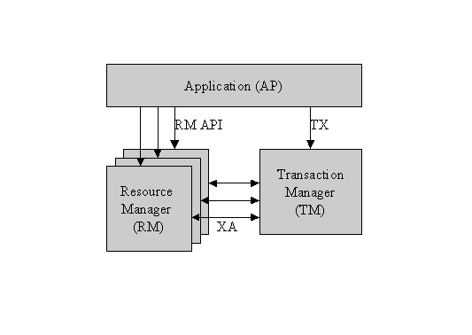

| MidWay Documentation | ||
| Prev | Top | Next |
The term transaction monitor stems from the earlier days since this technology was developed on mainframes to do vast number of transactions per seconds. The most famous of these are CICS. Since it was seemingly pointless to have a mainframe without a database there was a close integration between the transaction monitor and the database. Once simple since there was no many options when it came to selection a database. However the functionality was to have a database transaction span across several services. The function passing was just a mean to achieve this.
The concept of transactions used here is exactly the same as used in databases. A transaction is a group or set of work that are atomic, either it all succeed or it all never happened.
Sometimes the term transaction is used in reference to a request/response exchange. That is sloppy, and shall not happen in this documentation.
SRB's are sometimes referred to as Transaction Processing Monitors or just TP monitors. The "Transaction" part stems from three API calls, that do a transaction begin, abort, or commit. Every thing between the begin and commit are atomic. This is exactly the same as begin, abort and commit on SQL. Transaction is by RDBMS (Database monitors) to be a fairly advanced concepts. Commercial level RDBMS's has such as Oracle, Sybase, DB2, etc do for course have it. Postgres has it, while MySQL, and mSQL do not. For a RDBMS or another resource to cooperate with a TP monitor, it has to support two-phase commits. TP monitors tend to have a Transaction monitor that know about all the transaction capable resources and coordinate transactions among them. Tuxedo and CICS for examples can do this. TP monitors originated on the mainframe, and IBM had an easy time since they made both CICS, DB2, and the OS with file system. The makers of Tuxedo, had a tougher time and had to make an open interface standard. X-Open picked it up and it is called the XA interface. It is now a ISO standard. (Posix begun and abandoned work on a standard of its own. POSIX.11) In the X-Open world the API is tx_begin() tx_abort() and tx_commit(). They are pretty much identical to tuxedos tp_begin() tp_abort(), and tp_commit(). XA defines that the TP monitor must have a transaction monitor, and for each XA capable resource a resource monitor.

RM's
here means any resource such as RDBMS, file system, persistent queue,
etc.
Corba by the way defines an OTB (Object Transaction Broker). I've never checked out if the Linux version of Oracle support XA, but Oracle do support XA , so it seem a safe bet. The Linux version of Oracle seem pretty complete. THis is a rather advanced feature, and since I'm not really a DB person I'll exclude myself in the implementation of anything XA'ish in MidWay.
| Prev | Top | Next |
| © 2000 Terje Eggestad | ||